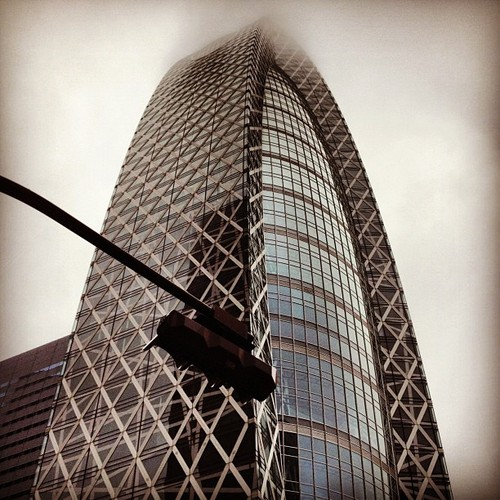
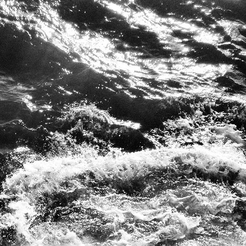
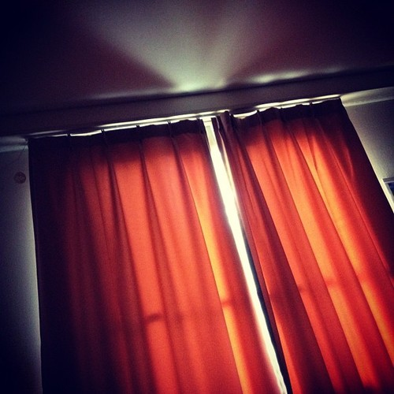

I am a PhD student at Columbia University Astronomy department. My current work focuses on weak lensing non-Gaussian statistics, including theoretical systematics and cosmological constraints with observations. The ultimate goal of this work is to learn about the large scale structure, which is a powerful tool to probe the dark energy equation of state (w) and other cosmological parameters. I previously worked on x-ray observations of neutron stars, simulation of neutron star's atmosphere, and optical spectroscopy of quasars.
Jia Liu
Jia Liu
ASTRONOMY DEPARTMENT | COLUMBIA UNIVERSITY
Research
2011 - present: Graduate student, Columbia University, New York
2012 - present: Weak lensing non-Gaussian statistics
Advisors: Zoltan Haiman, Lam Hui
2011 - 2012: Model x-ray bursts from neutron stars in three dimensions using IGCM code
Advisor: Kristen Menou
2012 summer: JSPS/EAPSI fellow, Japan Aerospace Exploration Agency, Japan
Test the capability of Astro-H, Japan's next x-ray space mission, to observe x-ray bursts from neutron stars
Advisors: Ken Ebisawa, Masahiro Tsujimoto
2009 - 2011: Post-baccalaureate, Columbia University, New York
Search for supermassive black hole binaries with optical spectroscopy
Advisor: Jules Halpern
Teaching
2014 Spring: TA C3602 Physical Cosmology DETF slides
2013 Fall: TA C1610 Theories of the Universe: From Babylon to the Big Bang
2013 Spring-Fall: TA Observing labs
2012 Fall: TA C1903 Astronomy Lab I - Earth, Moon, and Planets
2012 Spring: TA BC1753 Life in the Universe
2010 Fall - 2011 Fall: TA BC2001/2002 Barnard Physics Lab
Publications
Refereed and Submitted Papers
7. A Stringent Test for Supermassive Black Hole Binaries as an Explanation for Broad, Double-Peaked Emission Lines in Active Galactic Nuclei
Jia Liu, Mike Eracleous, & Jules Halpern
Submitted to ApJ (2015)
6. Cross-correlation of Planck CMB Lensing and CFHTLenS Galaxy Weak Lensing Maps
Jia Liu & J. Colin Hill
Submitted to PRD (2015)
5. Emulating the CFHTLenS Weak Lensing data: Cosmological Constraints from moments and Minkowski functionals
Andrea Petri, Jia Liu, Zoltán Haiman, Morgan May, Lam Hui, & Jan M. Kratochvil
Phys. Rev. D 91, 103511 (2015)
4. Cosmology Constraints from the Weak Lensing Peak Counts and the Power Spectrum in CFHTLenS
Jia Liu, Andrea Petri, Zoltán Haiman, Lam Hui, Jan M. Kratochvil, & Morgan May
Phys. Rev. D 91, 063507 (2015)
3. Impact of Magnification and Size Bias on Weak Lensing Power Spectrum and Peak Statistics
Jia Liu, Zoltán Haiman, Lam Hui, Jan M. Kratochvil, & Morgan May
Phys. Rev. D 89, 023515 (2014)
2. Discovery of a new TeV gamma-ray source: VER J0521+211
Archambault et al.
The Astrophysical Journal, Volume 776, Issue 2, article id. 69, 10 pp. (2013)
1. A Large Systematic Search for Close Supermassive Binary and Rapidly Recoiling Black Holes
Michael Eracleous, Todd A. Boroson, Jules P. Halpern, & Jia Liu
The Astrophysical Journal Supplement, Volume 201, Issue 2, article id. 23, 21 pp. (2012)
Conference Proceedings
2. The Impact of Magnification and Size Bias on Weak Lensing Power Spectrum and Peak Statistics
Jia Liu, Rencontres de Moriond Cosmology (2014)
1. Status and Prospects of The X-ray Astronomy Satellite Astro-H
M. Tsujimoto & J. Liu (2013)
Talks & Posters
Seminars
2014/10/30 "Cosmology Constraints from the Weak Lensing Peak Counts and the Power Spectrum in CFHTLenS ", National Astronomical Observatories of China, Beijing, China
2014/11/05 "Cosmology Constraints from the Weak Lensing Peak Counts and the Power Spectrum in CFHTLenS ", Jiaotong University, Shanghai, China
Conference Talks
2014/03/25 "Preliminary Results on CFHTLenS Peak Counts", Rencontres de Moriond Cosmology 2014, La Thuile, Italy
2014/01/13 "Magnification Bias on Weak Lensing Statistics", Cosmology On The Beach, Cabo San Lucas, Mexico
Public Outreach
2014/02/21 "Neutral Particle Power", Columbia Astronomy Public Outreach, New York, NY
2014/01/06 "Search For Life", St. Marcellinius Secondary School, Mississauga, Ontario, Canada
2012/04/20 "Exploring the neutron star", Gesamtkunstwerk 1020, New York, NY
Posters
2013/06/10-14 "Magnification Bias", CMB2013, Okinawa, Japan
2012/08/21 "X-ray Bursts with Astro-H SXS", Astro-H Summer Workshop, Kyoto, Japan
2012/06/15 "Exploring the Neutron Star", EAPSI Orientation, Hayama, Kanagawa, Japan
Observing Runs
MDM Observatory
2013/05/01-05/05 MDM 2.4m ModSpec + Templeton 1k, PI
2011/06/26-07/04 MDM 2.4m CCDS
2010/12/28-2011/01/02 MDM 2.4m OSMOS
2010/06/07-06/08 MDM 2.4m CCDS
2010/03/12-03/16 MDM 2.4m CCDS
2009/12/14-12/20 MDM 2.4m CCDS & 1.3m Templeton
2009/08/19-08/25 MDM 2.4m CCDS & 1.3m Templeton
2009/05/25-05/28 MDM 2.4m CCDS with Retrocam
2009/03/17-03/18 MDM 2.4m CCDS (Part of an observing class)
Contact
email: jia at astro.columbia.edu
[Template source: Isaac Montemayor]
Weak Lensing
Weak Lensing
Background
Weak gravitational lensing can constrain the cosmological parameters, using statistical measurement of background galaxy shape. The intrinsic galaxy shap is distorted by foreground masses, whose density fluctuation results from the expansion rate and the growth of structure. Because weak lensing is sensitive to fluctuations during vacuum dominated epoch, it has been proposed to be one of the most important probes of dark energy (the Dark Energy Task Force).
CFHTLenS Peak Counts & cosmological Constraints (ADS)
Lensing peaks have been proposed as a useful statistic, containing cosmological information from non-Gaussianities that is inaccessible from traditional two-point statistics such as the power spectrum or two-point correlation functions. Here we examine constraints on cosmological parameters from weak lensing peak counts, using the publicly available data from the 154 deg^2 CFHTLenS survey. We utilize a new suite of ray-tracing N-body simulations on a grid of 91 cosmological models, covering broad ranges of the three parameters Omega_m, sigma_8, and w, and replicating the galaxy sky positions, redshifts, and shape noise in the CFHTLenS observations. We then build an emulator that interpolates the power spectrum and the peak counts to an accuracy of <= 5%, and compute the likelihood in the three-dimensional parameter space (Omega_m, sigma_8, w) from both observables. We find that constraints from peak counts are comparable to those from the power spectrum, and somewhat tighter when different smoothing scales are combined. Neither observable can constrain w without external data. When the power spectrum and peak counts are combined, the area of the error "banana" in the (Omega_m, sigma_8) plane reduces by a factor of ~ two, compared to using the power spectrum alone. For a flat Lambda cold dark matter model, combining both statistics, we obtain the constraint sigma_8(Omega_m/0.27)^0.63 = 0.83 (+0.03, -0.01).
Magnification Bias (ADS)
Because of the statistical nature of weak lensing surveys, it is important to have an unbiased sample of source galaxies, fairly sampling the foreground density fuctuations across the sky. However, the foreground dark matter can distort the path of light rays from background galaxies, hence induce the magnification bias in observation. Magnification bias can:
1) Boost background galaxy density - In a magnitude-limited survey, some galaxies slightly fainter than the observation limit will now be magnified and included in the sample; and
2) Dilute density - A region on the sky appears to be larger due to the bending of light.
Does it matter? Yes, for LSST, the deviation from true parameters will be few σ (σ = standard deviation). However, it doesn't matter so much for current surveys that are smaller or shallower, such as CFHTLenS and DES.
Black Holes
Black Holes
Background
Theoretically, close binaries exist everywhere, but they are very hard to be observationally confirmed. I am comparing Sloan Digital Sky Survey spectra of quasars with displaced peaks in broad emission lines with spectra that I obtained several years later at MDM Observatory. I am looking for wavelength shifts in H-beta that could be evidence of binary orbital motion. Any significant shifts will be monitored in the future. The results are not yet clear.
Binary Evolution
The evolution of a supermassive black hole binary system involves three stages(Begelman et al,1980), summarized by Merritt & Milosavljevic (2005): 1) As the galaxies merge, the supermassive black holes sink toward the center of the new galaxy via dynamical friction forming a binary. 2) The binary continues to decay mainly due to the interaction of stars on orbits intersecting the binary, which are then ejected at velocities comparable to the binary's orbital velocity, carrying away energy and angular momentum. 3) Finally, if the binary's separation decreases to the point where the emission of gravitational waves becomes efficient at carrying away the last remaining angular momentum, the supermasive black holes coalesce rapidly, resulting low-frequency gravitational waves observable by the Laser Interferometer Space Antenna (LISA). Between stage 2 and 3, the binary system does not have an efficient way to radiate away momentum and energy, so it's likely to stall at a distance at parsec scale for a long time - the so-called final parsec problem.
Personal
Photography
Photos taken with my phone.


- 


- 


- 